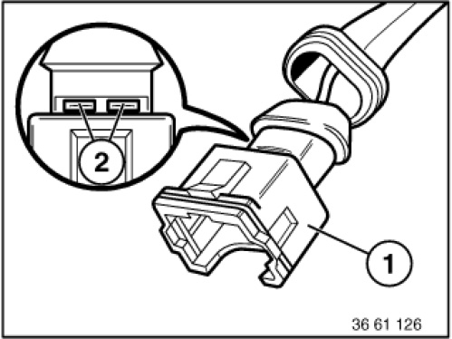

61 13 ... Instructions For Opening Contacts and Locks of Different Plug Contact Systems
61 13 ... Instructions For Opening Contacts And Locks Of Different Plug Contact Systems
Special tools required:
Abbreviations of contacts and what they mean:
ELA Strand seal
D 1.5 / 2.5 / 3.5 Round contacts with 1.5 mm, 2.5 mm or 3.5 mm diameter
MDK Miniature double flat spring contact
JPT Junior Power timer
DFK Double flat spring contacts
Elo Electronic contacts
Elo Power Electronic contacts for heavy load
MQS Micro Quadlock system
MPQ Micro Power Quadlock
MLK Mini laminated contact
SLK Sensor laminated contact
LSK Load current contact
MLK Mini laminated contact
Mcon Multi contact

IMPORTANT:
The contacts can be changed on ultrasonically welded plugs (1).
Ultrasonically welded plugs (1) must be replaced completely.
Ultrasonic-welded connectors (1) can be identified by the welds (2) on their longitudinal side.

NOTE:
Special tools referred to in the repair instructions below are contained in the following special tool kits:
- Release and pressing-off tool61 1 150
will be replaced on 09/2005 by 61 0 300 (BMW) and 61 0 400 (MINI)
- Release and pressing-off tool 61 1 100 (engine)
Repair instructions for opening plug housings and removing contacts of different plug systems:
Plug system D 1.5/D 2.5:
- Circular plugs, 7-, 8-pin, System D 2.5
- Circular plugs, 13-pin, System D 2.5
- Circular plugs, 20-pin, System D 2.5
- Circular plugs, 4-, 7-, 10-, 12-, 25-pin, System D 1.5/D 2.5
- In-line plugs, 15-pin, System D 2.5
- In-line plugs, 8-, 12-pin, System D 2.5
- In-line plugs, 30-pin, System D 2.5
- In-line plugs, 20-pin, System D 2.5
Plug system JPT/MDK/DFK:
- In-line plugs, 2-pin, System JPT ELA
- In-line plugs, 2-pin, System MDK 3plus 2.8
- In-line plugs, 4-pin, System DFK ELA
Plug system Elo/Elo Power:
- In-line plugs, 4-, 10-pin, System Elo
- In-line plugs, 6- to 50-pin, System Elo
- In-line plugs, 3-, 6-pin, System Elo Power 2.8
Plug system LSK:
- Plug housing LSK contact
Plug system MQS/MPQ:
- In-line plugs, 6-, 8-pin, System MQS
- In-line plugs, 2-pin, System MPQ 2.8
- Control unit plugs, 25-, 35-, 55-, 83-, 88-pin
- In-line plugs, 24-pin, Hybrid System MQS/MPQ
- Socket housing 42-, 43-pin, Hybrid System MQS / MPQ
- Socket housings 2x21-, 2x27-pin, Hybrid System MQS/MPQ, Elo/Elo Power
- In-line plugs, 30-pin, Hybrid System MQS/MPQ
- Socket housings, 5-, 8-pin, System MQS/MPQ
- Socket housing (radio plug), Hybrid System MQS/MPQ
For plug contact systems not listed, refer to Service Information:
SI 2 05 05 217
SI 2 05 06 294
SI 2 03 08 440
SI 2 08 06 312
SI 2 02 08 439
SI 2 01 08 438